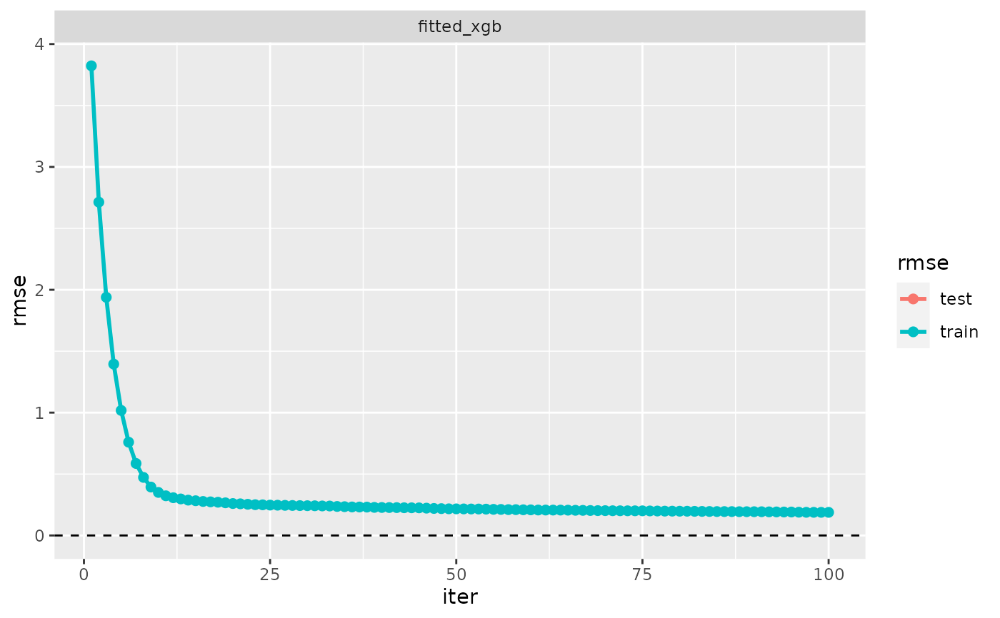
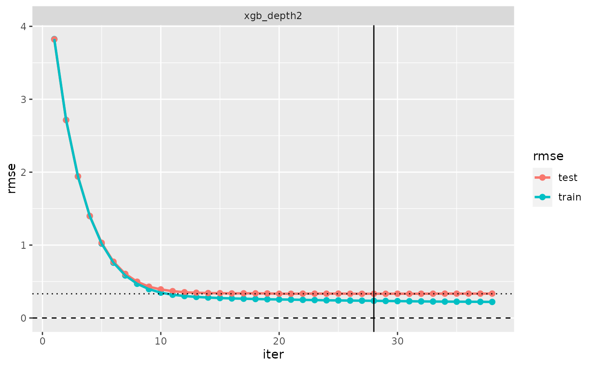
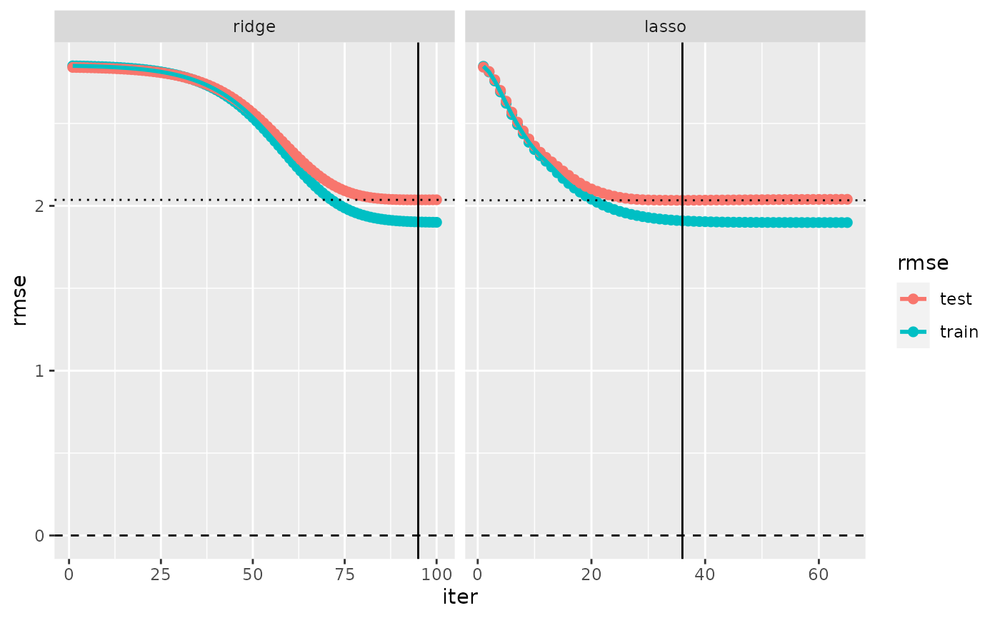

Evaluation log
evaluation_log.RdThis function is related to the concept of preferred iterations in the context iteratively fitted models (IFM).
See ifm and vignette("ifm") for more information on the peculiarities of this type of models.
An evaluation log is essentially the collection of the training and test error for all iterations of an IFM
(or a related “cv” object).
The most appealing way of displaying an evaluation log is usually by plotting it,
see plot.evaluation_log.
Usage
evaluation_log(x, ...)
# S3 method for cv
evaluation_log(
x,
metric = x$metric[1],
eval_weights = extract_model(x, 1)$weights,
na.rm = FALSE,
...
)
# S3 method for evaluation_log
print(
x,
se = getOption("cv_show_se"),
n = getOption("print_max_model"),
n_row = getOption("print_rows_evaluation_log"),
digits = 3,
...
)
# S3 method for fm_xgb
evaluation_log(
x,
label = deparse(substitute(x))[[1]],
metric = NULL,
eval_weights = weights(x),
...,
.data = eval.parent(x$call$data)
)
# S3 method for fm_glmnet
evaluation_log(
x,
label = deparse(substitute(x))[[1]],
metric = NULL,
eval_weights = weights(x),
...,
.data = eval.parent(x$call$data)
)
# S3 method for model
evaluation_log(x, metric = NULL, eval_weights = weights(x), ...)
# S3 method for multimodel
evaluation_log(
x,
metric = NULL,
eval_weights = extract_model(x, 1)$weights,
...
)
# S3 method for xgb.Booster
evaluation_log(x, label = deparse(substitute(x))[[1]], ...)Arguments
- x
Object of class “cv”, “model”, “multimodel” or other.
- ...
Arguments passed to methods.
- metric
A metric (see
metrics), specified either as a character string (name of the metric function), or as a named list of length 1, as inlist(rmse = rmse).metric=NULLselects the default metric, seedefault_metric.- eval_weights
Evaluation weights; see the “Evaluation weights” in the “Details” section of
?modeltuner."eval_weights=defaultmeans “use fitting weights” while"eval_weights=NULLmeans unweighted evaluation.- na.rm
Logical: Whether NA values should be excluded from computations.
- se
Logical: Show standard errors?
- n
Integer: Information will be printed for
nmodels at most.- n_row
Integer: Evaluation log tables are printed by selecting
n_rowrows, approximately equally distributed from first to last iteration. Iteration corresponding to the choice according to criteria ("min"etc.) are added.- digits
Number of digits to be printed.
- label
Model label
- .data
Passing data - for internal use.
Value
evaluation_log() returns an object of class “evaluation_log”.
If x has no evaluation log, a (essentially empty) dummy object is returned.
Details
The evaluation log of a “model” (or fitted model) includes the training error only, while the evaluation log of a cross-validated model (object of class “cv”) has both training and test errors.
If there are several models and no metric is specified, the default_metric from the first model is used.
If x includes models having different weights, evaluation_log() will use eval_weights=NULL.
Running evaluation_log() with a non-default metric requires a “cv” object
that has been created with keep_fits=TRUE.
Whenever there are NA predictions and na.rm=TRUE, the errors are calculated based on observations
with non-NA predictions for all iterations, such that the same subset of observations is used for all iterations.
Examples
# Evaluation log of a 'fm_xgb' model
fitted_xgb <- fm_xgb(Sepal.Length ~ ., iris, max_depth = 2)
evaluation_log(fitted_xgb) # evaluation log of a model has no
#> ‘evaluation_log’, 1 model:
#>
#> Model ‘fitted_xgb’:
#> model class: fm_xgb
#> iter train_rmse test_rmse
#> 1 3.823 NA
#> 21 0.258 NA
#> 41 0.227 NA
#> 60 0.209 NA
#> 80 0.197 NA
#> 100 0.188 NA
plot(evaluation_log(fitted_xgb))
#> Warning: Removed 100 rows containing missing values (`geom_point()`).
#> Warning: Removed 100 rows containing missing values (`geom_line()`).

# Evaluation log of cross-validated 'fm_xgb' model
cv_xgb <- cv(model(fitted_xgb, label = "xgb_depth2"))
evaluation_log(cv_xgb)
#> ‘evaluation_log’, 1 cross-validated model:
#>
#> Model ‘xgb_depth2’:
#> model class: fm_xgb
#> iter train_rmse test_rmse criterion
#> 1 3.825 3.821
#> 8 0.469 0.497
#> 16 0.268 0.337
#> 23 0.246 0.334
#> 28 0.236 0.332 min
#> 31 0.229 0.332
#> 38 0.220 0.335
plot(evaluation_log(cv_xgb))

# Evaluation log of several cross-validated models
mydata <- simuldat()
fitted_glmnet <- fm_glmnet(Y ~ ., mydata)
cv_glmnet <- cv(multimodel(fitted_glmnet, prefix = "glmnet", alpha = 0:1))
label(cv_glmnet) <- c("ridge", "lasso")
evaluation_log(cv_glmnet)
#> ‘evaluation_log’, 2 cross-validated models:
#>
#> Model ‘ridge’:
#> model class: fm_glmnet
#> iter lambda train_rmse test_rmse criterion
#> 1 1021.414 2.85 2.84
#> 21 158.899 2.83 2.82
#> 41 24.720 2.69 2.70
#> 60 4.220 2.29 2.35
#> 80 0.657 1.94 2.06
#> 95 0.163 1.90 2.04 min
#> 100 0.102 1.90 2.04
#>
#> Model ‘lasso’:
#> model class: fm_glmnet
#> iter lambda train_rmse test_rmse criterion
#> 1 1.02141 2.85 2.84
#> 14 0.30475 2.20 2.24
#> 27 0.09093 1.95 2.04
#> 36 0.03936 1.91 2.03 min
#> 39 0.02977 1.90 2.03
#> 52 0.00888 1.90 2.04
#> 65 0.00265 1.90 2.04
plot(evaluation_log(cv_glmnet))
